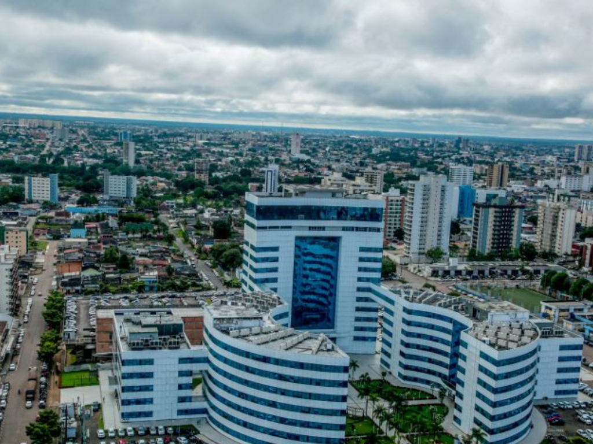

Rondônia é um estado localizado na região Norte do Brasil, conhecido por sua grande diversidade ambiental e importância para a Amazônia. Sua capital, Porto Velho, é um importante centro econômico e cultural da região. Rondônia possui uma economia baseada principalmente na agropecuária, na produção de grãos, na pecuária bovina e na geração de energia hidrelétrica, destacando-se usinas como Santo Antônio e Jirau, no rio Madeira. Além disso, o estado abriga áreas de floresta amazônica preservada e comunidades indígenas, refletindo a riqueza natural e cultural da região. O crescimento populacional e econômico de Rondônia foi impulsionado principalmente pelos projetos de colonização e pela expansão das rodovias nas décadas de 1970 e 1980.
